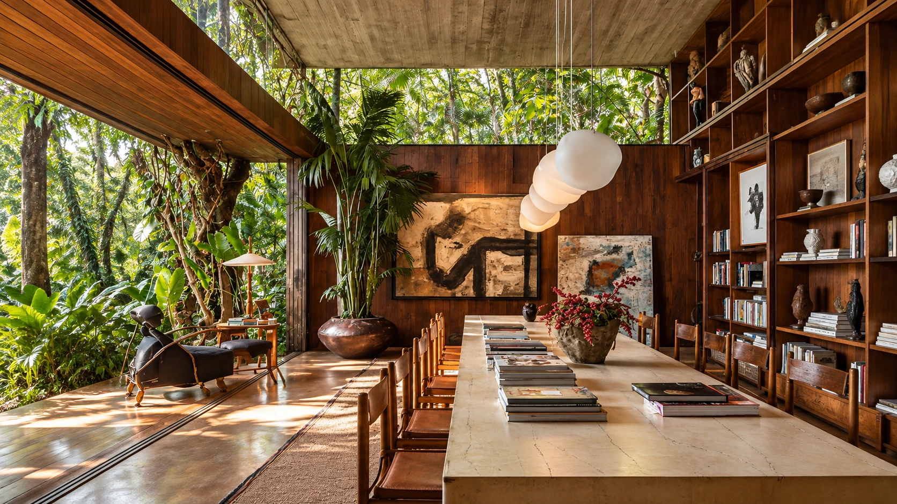
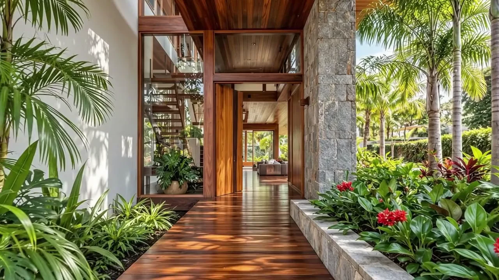
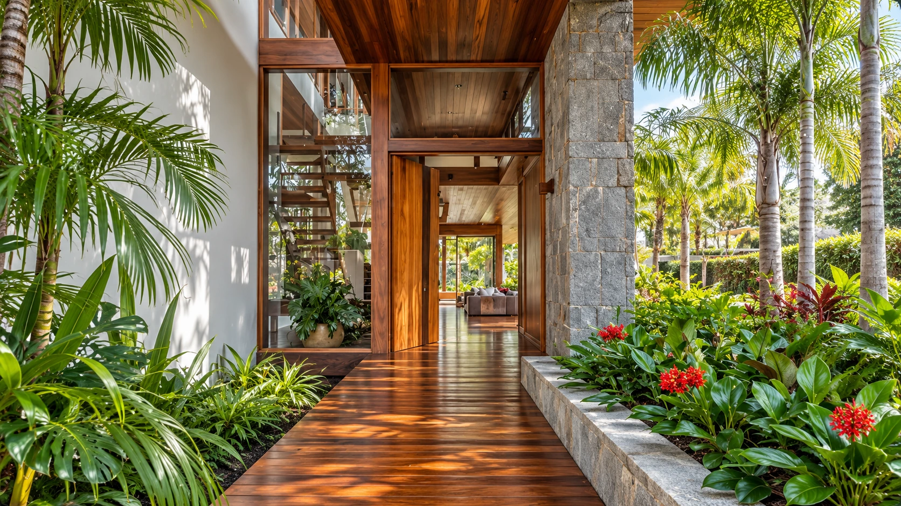
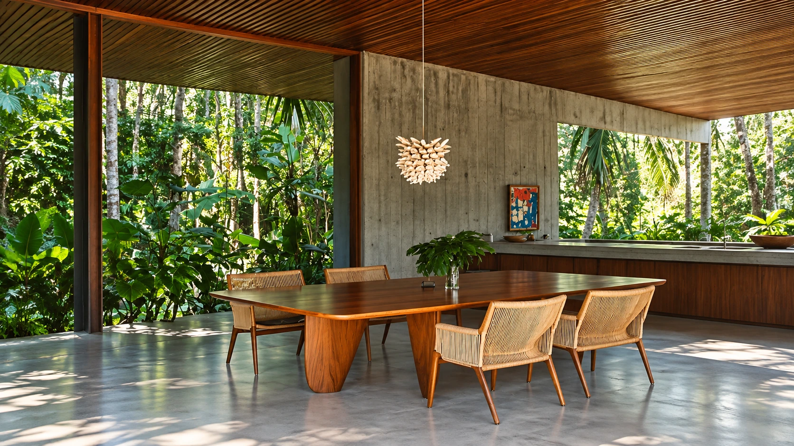
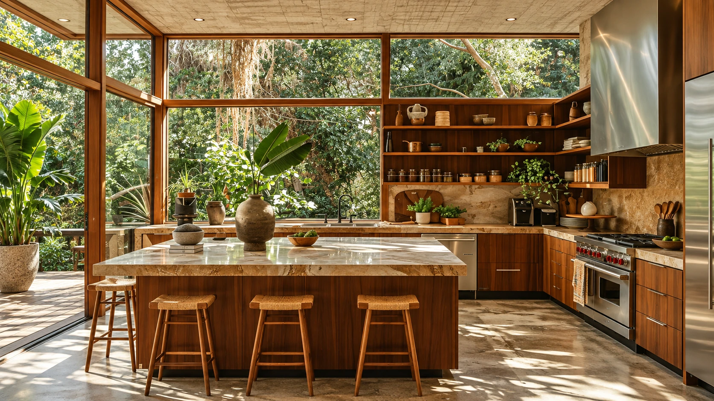
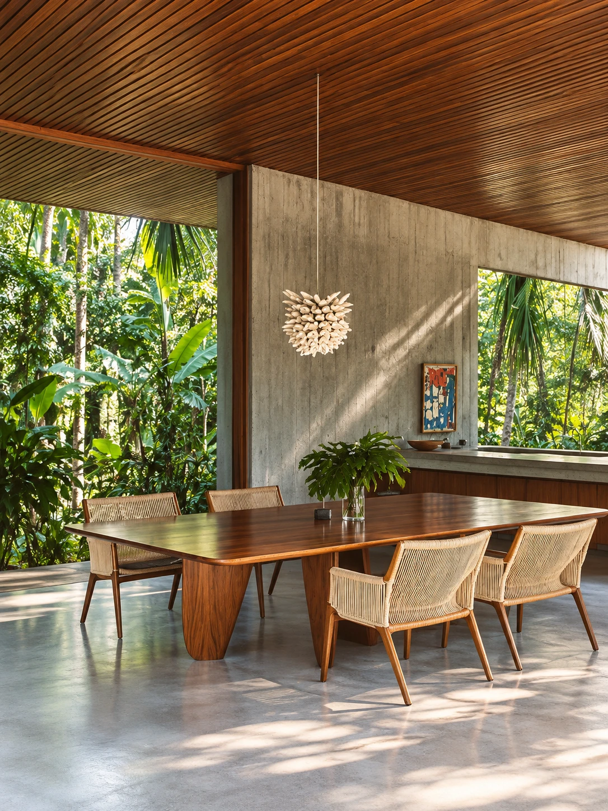
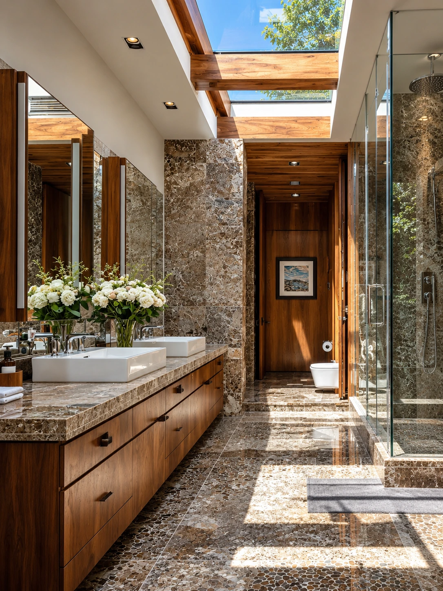

Residência / Estudo conceitual
Casa da Mata
Aberturas amplas e ambientes voltados ao jardim aproximam a vida da mata. Madeira e espaços de convívio dão escala e acolhimento à casa.

Paisagem · Matéria · Memória
Arquitetura contemporânea brasileira.
Casas desenhadas para a paisagem e para quem vive nelas.
01 / O estúdio
O lugar é o ponto de partida.A sombra da varanda.
A conversa sem pressa.
A casa de portas abertas.
Somos o Alpendre, um estúdio de arquitetura contemporânea brasileira. Partimos do lugar e da rotina de quem vai morar: como recebe, descansa e se relaciona com o lado de fora.
Implantação, orientação solar e circulação dão forma a essas escolhas. Varandas, jardins e materiais naturais aproximam a casa da paisagem e tornam o cotidiano mais acolhedor.

O encontro entre casa e paisagem
O vento passa. A luz desenha.
A natureza encontra seu lugar.
02 / As casas
Três estudos sobre o habitarTrês casas, três pontos de partida: a mata, o pátio e a luz. Estudos conceituais que exploram diferentes formas de viver a arquitetura brasileira.

Residência / Estudo conceitual
Aberturas amplas e ambientes voltados ao jardim aproximam a vida da mata. Madeira e espaços de convívio dão escala e acolhimento à casa.

Residência / Estudo conceitual
O pátio reúne os ambientes e organiza os encontros. Beirais generosos criam sombra e uma passagem tranquila entre a casa e o jardim.

Residência / Estudo conceitual
Cozinhar, receber e estar junto orientam a planta. Luz natural, ambientes integrados e pedra clara acompanham os pequenos rituais da casa.
Casa da Mata, 1 de 3.
03 / A matéria
Feita para ser sentida.Madeira, pedra e vegetação dão textura, frescor e sombra aos espaços. Escolhas que aproximam a arquitetura de quem a habita.
Nos forros, na marcenaria e nos móveis, a madeira traz calor ao ambiente. Seus veios e tons naturais tornam cada superfície singular.
Pisos, bancadas e paredes revelam os veios da pedra natural. Textura e frescor acompanham o uso diário e a passagem do tempo.
O jardim participa do projeto desde o início. Filtra a luz, cria sombra e aproxima os ambientes do ritmo das estações.


04 / Pertencer
Há lugares que ficam na gente.Casas abertas à paisagem, ao encontro e ao tempo.
Um olhar atento às formas de viver.